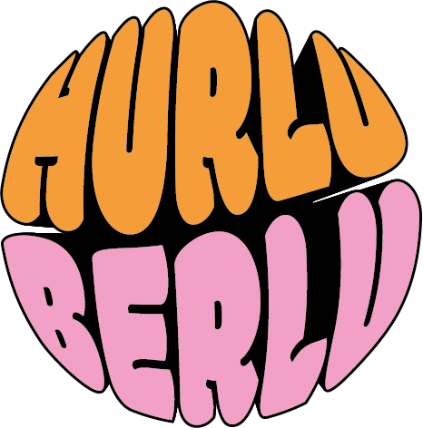
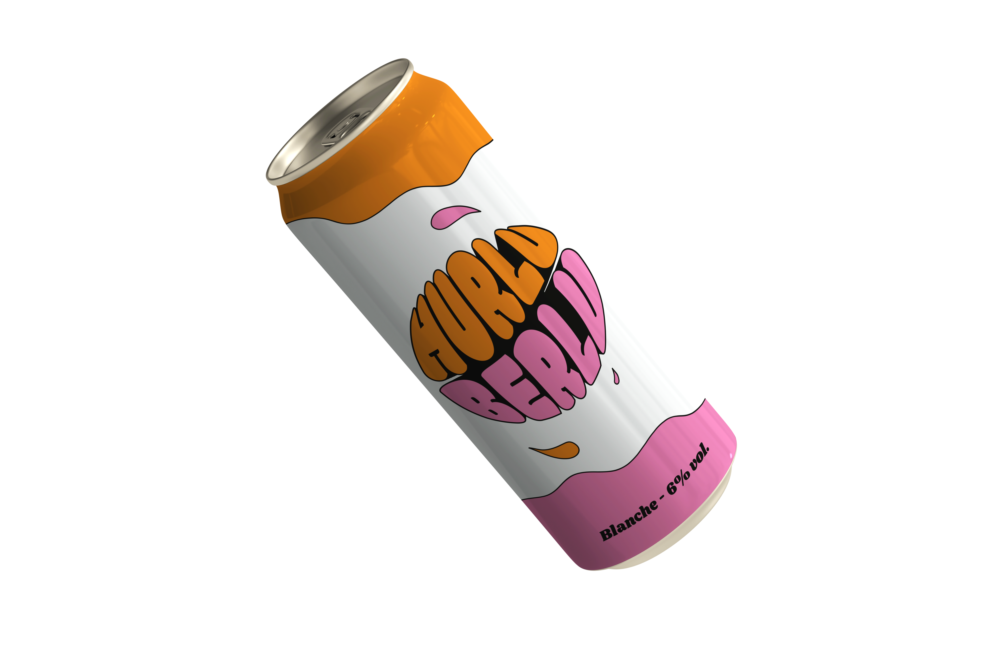

Hurluberlu
Identité de marque
Hurluberlu, c'est un projet scolaire réalisé durant mon semestre au
CEGEP Vanier à Montréal. L'objectif était de créer une marque
éco-responsable parmi 6 catégories : Vêtements, Société de transports, Alimentaire, Musées, Festival, Société de livraison.
C'est alors que j'ai choisi de créer ma propre bière.

La première étape de ce projet consistait à sélectionner une
marque dans la catégorie de notre choix. Nous avons procédé
à une analyse approfondie de leur objectif, de leur positionnement
sur le marché, ainsi que de leur personnalité et de leur histoire.
Nous avons puisé notre inspiration à partir de ces éléments, ainsi que de
leur identité visuelle, afin de créer notre propre marque.
Hurluberlu désigne quelqu'un d'extravagant, qui parle et agit de manière
imprévisible et spontanée. C'est l'essence même de la marque.
Elle est destinée aux amateurs, aux amis, à tous ceux
qui cherchent une boisson sans prise de tête.
J'ai choisi de proposer des bouteilles en forme de canette, qui
sont consignées afin de limiter les déchets inutiles. Cela s'inscrit
dans un engagement en faveur de l'environnement et la volonté
de proposer une expérience de consommation responsable.

Le logo, réalisé sur Adobe Illustrator avec la police "Modak", a été conçu
de manière à attirer l'attention, grâce à une perspective soigneusement
étudiée et à une police de caractères ludique. La combinaison des couleurs
orange et rose renforce son dynamisme et sa personnalité unique.
Le choix de l'orange comme couleur principale représente l'énergie,
la joie et la créativité, tandis que le rose évoque l'amitié et l'innocence.
Ensemble, ces couleurs reflètent parfaitement l'identité de
notre marque et l'esprit de notre produit.
La canette est designée dans la continuité du logo,
avec des gouttes pour ajouter de la fraîcheur et du caractère.

En conclusion, le projet a été très enrichissant du point de vue créatif,
notamment au niveau du choix de typographie et de couleurs,
qui ont tous les deux un sens très fort et qui sont tout aussi
importants que le design du produit en lui-même.
 Le guide de style de la marque est disponible ici.
Le guide de style de la marque est disponible ici.